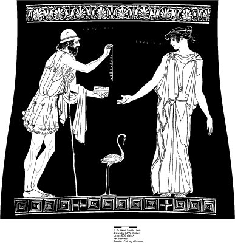
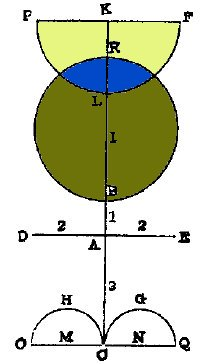
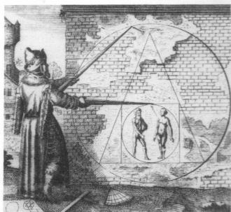
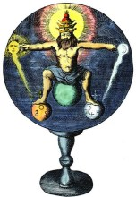

Emblema XXXIX.
revu le 9 mai 2002
Oedypus Sphynge superata & trucidato Lajo patre matrem ducit in uxorem.
(Œdipe, ayant vaincu le sphinx et mis à mort son père Laïus, fait de sa mère son épouse1.)
Le sphinx qui effrayait Thèbes par ses énigmes
Fut réduit par Œdipe à se donner la mort2.
Celui-ci dut nommer l’être qui le matin
A quatre pieds, deux à midi, et trois le soir.
Vainqueur, il doit tuer Laïus qui lui résiste,
Et de celle qui est sa mère il fait sa femme.
Le philosophe Bacasser déclare dans la Turba :
" Ce que vous recherchez n’est pas de peu de prix. Vous recherchez le plus grand des trésors, le présent le plus excellent de Dieu. Et reconnaissez, ô chercheurs, ce que les philosophes ont indiqué tout à l’heure en disant ; que ce qui est DROIT ne se discerne pas sans erreur, et rien n’engendre plus de souffrance dans le cœur que l’erreur dans cet art et dans cette œuvre ; car tandis que l’on pense avoir opéré et posséder le monde, on se retrouvera les mains vides. "3
Les anciens philosophes ont voulu montrer les mêmes vérités en proposant l’image du SPHINX qui représente l’obscurité et les complications de l’œuvre. C’est pourquoi, dans les mystères isiaques que les Egyptiens célébraient en l’honneur d’Osiris, des prêtres mitres, la tête et tout le corps rasés, portant une tunique Manche et un vêtement de lin, dressaient sur le devant de l’autel une statue du Silence nommée Sigalion, afin que ces mystères soient cachés et demeurent inconnus du peuple4 ; les assistants recevaient le commandement de se taire et de tourner les yeux vers cette image. Dans le même but ils ajoutaient aux angles de l’autel des statues de SPHINX qui signifiaient la connaissance secrète des choses sacrées. Boissard le démontre à partir des Anciens. Le sphinx en effet est une espèce de monstre très obscur qui propose des énigmes aux Thébains, et non seulement à eux, mais comme il le fit auparavant aux Egyptiens, il en propose à tous ceux qui aspirent a cet art après eux, et il monte la garde dans les livres des philosophes comme devant les portes de Thèbes. Si quelqu’un échappe à ce monstre, celui-ci ne lui causera aucun mal, mais l’homme qui s’appuyant sur l’audace de son courage ou de ses talents tente de dénouer ses énigmes prépare, s’il échoue, sa propre mort, c’est-à-dire de la douleur pour son cœur et du dommage pour ses biens, pour s’être trompé dans cette œuvre5. Celui qui applique ces allégories à l’histoire possède un champignon à la place du cerveau et un melon à la place du cœur, comme dit le Comique, et ne juge pas plus sainement que celui qui s’égare alors qu’il est sur le droit sentier6. Ces choses sont par trop puériles et dignes de vieilles femmes si on les prend à la lettre ; saisies différemment elles sont des témoins et des marques d’une doctrine profonde. On dit, il est vrai, qu’il existe en Afrique des bêtes monstrueuses nommées sphinx, mais ce n’est pas d’elles qu’il est question ici, bien que leur origine et leur nom semblent avoir été empruntés à celles qui nous occupent. Le sphinx philosophique a compris et utilisé un langage humain, la langue grecque, et a proposé des rébus subtils et des questions énigmatiques dans lesquels apparaît l’extrême finesse d’un savoir et d’une doctrine remarquables qui évite ainsi de se produire à tout venant (car les êtres sans raison en sont bien éloignés). Tels sont bien les enseignements philosophiques : seuls ceux qui se sont adonnés à leur étude les comprendront facilement. Car là où une chose est dite et une autre comprise, l’équivoque engendre l’erreur, et cela est non seulement permis, mais commandé aux seuls philosophes7.
La ville de Thèbes ayant été longtemps tourmentée par les énigmes du sphinx, il se trouva un certain Œdipe qui répondit aux questions posées, d’une manière telle que le sphinx fut contraint de se précipiter du haut d’un rocher. Mais qui est Œdipe ? Le fils du roi des Thébains. Un oracle ayant prédit à son père qu’il serait tué par son fils, le roi ordonna de mettre Œdipe a mort. Il fut suspendu à un arbre au moyen d’une corde passée dans ses pieds que l’on avait percés. Ainsi abandonné, il fut délivré et élevé par un certain paysan. Devenu grand il eut, il est vrai, les pieds enflés, mais il manifesta d’une façon assez claire la vivacité supérieure de son esprit en dénouant l’énigme proposée par le sphinx. On dit que les énigmes du sphinx étaient très nombreuses mais que la principale était celle-ci, qui fut présentée à Œdipe :
" Le matin il a quatre pieds ; à midi, deux pieds ; le soir, trois pieds. Qui est-ce ? "8
On ignore ce qu’Œdipe répondit, mais d’autres l’ont entendu des âges de l’homme, en quoi ils se trompent. Il faut en effet considérer d’abord le carré ou les quatre éléments de toutes choses ; de là on parvient à l’hémisphère (il a deux lignes, l’une droite, l’autre courbe), c’est-à-dire la lune blanche ; puis on passe au triangle, qui se compose du corps, de l’esprit et de l’âme, ou du soleil, de la lune et de Mercure9. C’est pourquoi Rhasis dit dans son épître :
" La Pierre est un triangle dans son être, un carré dans ses qualités. "10
C’est aussi le sujet du XXI° Emblème et de son explication.
Œdipe est accusé de parricide et d’inceste, les deux crimes les plus affreux que l’on puisse imaginer, et qui cependant l’ont porté au trône (trône qui d’ailleurs lui était dû à d’autres titres). Il tua en effet son père qui ne voulait pas lui céder le passage, et épousa sa propre mère, la reine, épouse de Laïos. Toutefois ceci n’a pas été écrit comme une histoire ou un exemple à imiter, mais inventé et présenté allégoriquement par les philosophes pour découvrir les secrets de leur doctrine11. Les crimes rapportés se rencontrent en effet tous deux dans cette œuvre ; car le premier agent, ou père, est renversé et terrassé par son effet, ou fils ; puis ce même effet s’unît à la seconde cause jusqu’à devenir une seule chose avec elle ; ainsi le fils est uni en mariage à sa mère et il s’empare du royaume de son père comme en vertu du triple droit des armes, de l’alliance et de la succession12. Il a les pieds enflés et, par suite, ne peut courir, il ressemble à un ours, comme le dit Le Suprême Secret, ou à un crapaud, par sa démarche lente13. Etant fixe, il fixe les autres corps ; il ne fuit ni ne redoute le feu. Les philosophes ont le plus grand besoin de ce moyen, bien qu’il soit vil14.
Notes1. Ce nouveau chapitre est consacré à l'évolution du temps hermétique et au Mercure philosophique qui doit supplanter le Mercurius senex. A ce moment, ce Mercure est composé de l'embryon hermétique, résultat de la conjonction encore fragile des deux natures métalliques, et du moyen qui lui permettra de croître. Ce moyen ou milieu a été voilé souvent sous l'épithète de la Vierge. Ici, il l'est par la mère d'Oedipe qui joue le rôle de Virgo paritura. Quant au sphinx, ce n'est certes pas à Oedipe qu'il pose son énigme, mais bien à l'Artiste, à qui échoit les travaux d'Hercule. Là encore, nous implorons la clémence du lecteur pour le tissu d'invraisemblances et de rapprochements douteux que le texte de Michel Maier nous porte à mentionner, mais nous serons amenés à constater que les réflexions de Maier ne sont pas étrangères aux supputations extravagantes qu'on lira ci-dessous. Quoi qu'il en soit, l'emblème XXXIX montre au premier plan les trois âges de l'homme ; la demi-sphère, au milieu, est originale et nous verrons plus loin qu'elle rejoint certaines figures de la Monade Hiéroglyphique de John Dee. Par ailleurs, on voit des sirènes, animal figurant le Soufre naissant.

FIGURE I
(la sirène noire et enceinte, Deux Logis alchimiques)
La sirène [seirhn] manifeste que la procréation hermétique se déroule au sein de l'eau mercurielle. Pourquoi ces sirènes sur l'emblème XXXIX ? Parce que les trois âges de l'homme procèdent d'une évolution ; de même, la sirène représente un état intermédiaire entre le fixe et le mobile, un peu comme le dauphin ou le rémora chez d'autres auteurs. Du reste, E. Canseliet, dans le chapitre qu'il a consacré à la Sirène noire et enceinte, dans ses Deux Logis alchimiques, a explicité le sens du mot sirène :
« L'examen est simple et satisfaisant, du vocable sirène, que formèrent les deux substantifs grecs seir, seir, soleil, et enh, enê, lune, de sorte qu'y sont associés les deux astres philosophiques. » [p. 254]
Mais, le symbolisme de la sirène se rattache aussi aux oiseaux à têtes féminines, localisés sur une île de la côte tyrrhénienne, et qui déterminent, à cause de leur chant, la perte des navigateurs. L'emblème XXXIX est éloquent sous ce point de vue et montre deux Artistes égarés par ces chants diaboliques. Les Argonautes ne purent échapper à leur séduction que grâce à la lyre d'Orphée et Ulysse [Odysseus], en suivant les prescriptions de Circé. La tradition populaire leur prête un caractère de « vierges, filles de la terre » et de démons funèbres. Elles tiennent donc à la fois de Lucifer et de Vesper, montrant par là le caractère toujours incertain de la route droite que doit suivre l'Artiste lors de la coction, pour ce qui concerne la conduite du feu en particulier [cf. infra, note 9]. La sirène ne peut, dans le magistère, apparaître que lorsque Sirius se manifeste, signe de la chaleur caniculaire [seirioV]. Ces réflexions nous font douter du bien fondé absolu du trait de cabale, où E. Canseliet voit dans la sirène l'empreinte de la Lune, alors qu'on y voit, au contraire, le soleil dans tout son éclat, péril que les imprudents - qui n'ont pas su trouver le secret du loup - payent de leur vue et, tels Phaéton, perdent le contrôle de leur char, c'est-à-dire de leur feu et voient se dissiper l'objet de leur quête...Les Egyptiens voyaient dans la Sirène, sous forme d'un oiseau à tête humaine, l'âme des défunts et cette chimère a dès lors été considérée comme l'âme du mort. Cette vision, pour absurde qu'elle puisse paraître à notre époque, n'en exprime pas moins une vérité hermétique et les poètes Surréalistes ont bien saisi ce symbolisme, comme René Char, qui écrit, dans le Marteau Sans Maître :
« Des yeux purs cherchent en pleurant la tête habitable »
exprimant avec netteté l'opération que doit réaliser l'Artiste, de donner un corps capable de capter et d'héberger à son aise le rayon igné solaire [l'âme du mort chez les Egyptiens]. Ulysse n'a dû son salut que grâce à Circé, qui lui a conseillé de s'attacher au mat, c'est-à-dire de se fixer, tandis que les oreilles de ses compagnons étaient assourdies avec de la cire. Or, Circé [Kirkh] manifeste tous les signes avant-coureurs de la fixation du Soufre. Fille d'Hélios et soeur d'Aiétès, elle s'apparente à l'oiseau de proie [kirkoV, le faucon, animal dédié à Horus]. Et Horus [cf. Atalanta, VII] est assimlé par les cabalistes à l'hypoténuse d'un triangle rectangle. En Égypte, le faucon représente l'âme. Il évoque aussi l'élévation spirituelle. Tout concourt donc à faire du faucon l'équivalent du Soufre rouge en puissance. L'analogie ne s'arrête pas là : kirkoV désigne aussi une sorte de loup et un anneau, à valeur de carcan, évoquant un moyen ou une méthode de fixation. Mais il y a plus encore : Le KirkaV est un vent qui souffle de Circaeum en Italie et qui est semblable à un vent grec, le QrakiaV. Or, nous avons vu ailleurs [Atalanta, I et XXXII] que le terme qrakias désignait une « pierre qui prenait feu dans l'eau », ce qui consitue, d'un point de vue du cabaliste, exactement le caractère du Soufre en cours de réincrudation [n'oublions pas que le signe du Soufre associe un D et une +].
2. Sur le sphinx, voyez la note 7 de l'Atalanta, XVI. Sur Thèbes, rappelons qu'il s'agit de la ville la plus célèbre de la mythologie, fondée par Cadmos dont les rapports avec l'Art sacré sont des plus importants. Nous avons déjà conté la légende d'Amphion et de Zéthos, dont la mère est Latone [ou Antiope selon une autre version, cf. Atalanta, XXXVIII]. Il se trouve que c'est sur les épaules de ces deux héros que reposa la reconstruction de Thèbes [comprenez le second Mercure]. Ils bâtirent de nouvelles murailles selon un plan où se devine une intention hermétique : l'un transportait des pierres [le fixe] tandis que le second jouait de la lyre et parvenait ainsi à charmer les matériaux [il jouait donc le rôle du Mercure, agent de fluidité et de liaison à travers l'espace et le temps] qui se disposaient d'eux-mêmes selon les plans. La ville donna naissance à Hercule et à Dionysos [le vin des sages] ; elle devint par la suite le lieu de deux grandes épopées mythiques, celle des Sept chefs et celle des Epigones.
La première épopée a fait l'objet d'une tragédie, écrite par Eschyle, les Sept contre Thèbes. Elle raconte comment la lutte qui opposa les deux frères Etéocle et Polynice, après la mort de leur père, Oedipe, qui épousa sa propre mère, Jocaste. Tout cela est bien connu. Cette fable a-t-elle des rapports avec l'hermétisme ? Voilà qui reste à montrer. Interrogeons d'abord les maîtres de l'Art. Pernety, à l'article Oedipe, se contente de résumer la légende et renvoie au livre III de ses Fables :
Œdipe. Fils de Laïus et de Jocaste. Son père ayant appris de l'oracle qu'il mourrait de la main de son fils, le fit exposer afin qu'il pérît. Un Berger ; l'ayant trouvé suspendu par un pied à un arbre, le délia, et le porta au Roi de Corinthe. La Reine, qui n'avait point d'enfants, l'adopta et le nourrit. Quand il fut grand, il apprit de l'Oracle qu'il aurait des nouvelles de ses parents s'il allait dans la Phocide. Il se mit en chemin, et ayant rencontré son père, il le tua sans le connaître. Arrivé à Thèbes, il devina et donna la solution de l'énigme que Sphinx avait proposée; Jocaste, qui devait être la récompense de celui qui résoudrait cette énigme, fut adjugée et mise entre les mains d'Œdipe qui l'épousa, et en eut deux fils, Ethéocle et Polynice, avec deux filles, Antigone et Ismène. Œdipe reconnut ensuite ses crimes, et se creva les yeux. Voyez les Fables Egyptiennes et Grecques dévoilées, liv. 3.Dans les deux premiers livres de ses Fables, il ne mentionne Œdipe que pour faire référence aux énigmes posées par les alchimistes en inférant que le héros thébain les eut résolues d'un tour de main. Les Modernes sont restés muets, à l'instar du sphinx, sur notre héros. Quant aux auteurs classiques, peu ont écrit sur Œdipe : on peut citer l'Anonyme d'Huginus à Barma [qui a glosé du reste, dans le même sens que Pernety] ; on nommera également Salomon Trismosin, dans sa Toyson d'or [mais là encore, il n'a pas dépassé le niveau d'argumentation élémentaire de ceux que nous venons de citer].

FIGURE II
(Polynice offre à Eriphyle le collier d'Harmonie, Ve siècle av. J.-C.)
- Par son étymologie, Œdipe a le sens de « pied enflé », de oidew [s'enfler, grossir, grossir mais aussi ce qu'on a moins dit : fermenter, se soulever]. Or, dans l'époque de l'oeuvre qui nous arrête ici, l'apparition de la Vierge [incarnée en l'occurrence par Jocaste] coïncide évidemment avec une germination [la conjonction a eu lieu bien avant]. Par ailleurs, oidma prend le sens de mer, avec l'idée de vents du Sud soulevant la mer, qui ainsi, se fait grosse. Tout semble indiquer l'idée, en bref, d'une parturition insolite.
- Le nom du père d'Œdipe, Laïos ou Laïus [LaioV], signifie [laioV] « ce qui est à gauche. » ou encore [laion, en proche assonance] « champ ensemencé » qu'il ne reste plus qu'à faire « soulever » afin que le grain germe [voyez le Traité de l'Astronomie Terrestre d'E. Kelly, révélateur à cet égard].
- Jocaste [Iokasth], par la racine Io n'est pas sans évoquer le parfum ennivrant de la violette, signe de la conjonction des principes, mais c'est là, reconnaissons-le, abuser de la cabale hermétique. Jocaste était appelée par Homère Epicaste.
Voyons à présent les enfants de cette union des contraires :
- Etéocle [EteoklhV] a valeur d'une année [eteioV] : un accord avait passé entre Etéocle et son frère, Polynice, comme quoi, après qu'ils eurent chassé leur père de Thèbes, chacun devait régner un an à tour de rôle sur la ville. Mais Etéocle fut parjure, ce qui déclencha la lutte des « Sept contre Thèbes ». [Par cabale, on peut assigner à Etéocle le rôle d'un verrou ou plus généralement de ce qui sert à fermer : klhV = kleiV : verrou. On pourrait donc dire, par extravagance, qu'Etéocle constitue le « vrai » - eteioV - verrou, c'est-à-dire la fermeture d'Hermès...]. A noter qu'après sa mort, Etéocle eut droit à des funérailles somptueuses, contrairement à Polynice, parce qu'il avait défendu sa patrie.
- Polynice [PoluneikhV], littéralement « nombreuses discordes » en décomposant en polu - neikoV. Devant le refus de son frère de lui confier le règne de Thèbes durant un an, il se réfugia auprès d'Adraste, le roi d'Argos, dont il épousa la fille Argia. Adraste [AdrastoV] a valeur de point fixe, immobile. Roi de Sicyone et d'Argos, c'est le seul qui échappa au désastre des Sept Chefs contre Thèbes et qui prit sa revanche dans l'expédition des Epigones. Quant à Argia [Argeia], on peut la rapprocher de arghV [éclatant de blancheur]. Peut-on voir dans ce complexe Adraste-Argia un sel infusible [sel blanc fixe, dans lequel on peut reconnaître la terre blanche de Samos ou l'alkali fixe].La seconde épopée est celle des Epigones. Ce nom fut donné aux fils de ces Sept Chefs qui avaient participé à l'expédition contre Thèbes, où tous avaient péri sauf Adrasté, le roi d'Argos. Pour venger la mort de leurs pères, les Epigones décidèrent de faire une expédition de représailles. On compte parmi eux Alcméon et Amphilocos. Thersandros, fils de Polynice, etc. Leur chef fut Alcméon. Ils furent victorieux : le fils d'Etéocle, Laodamas, fut tué et, après une offrande à Apollon, Thersandros fut installé sur le trône après plus de dix années de lutte. Ainsi Polynice était-il vengé de ses malheurs par son fils.
3. Sur la voie droite, celle à suivre, voyez l'Atalanta, XXXV, note 14.
4. Le silence, en grec, sigaw, est proche de sigalow, qui est l'action de polir, de rendre brillant. Ce que l'Artiste doit s'attacher à faire de son Airain.
5. Le sphinx [sjix] a classiquement une tête de femme, un corps léonin, et posèède des ailes. Seul Œdipe est parvenu à déjouer ses ruses. Il se raatahce, par cabale, à une action astringente [sjiggw] qui rappelle celle de certains sels utiles à l'oeuvre comme l'alun. Oedipe joue donc le rôle d'un corps capable de lever une étreinte, c'est-à-dire une fixation. Dans l'époque de l'oeuvre qui nous intéresse ici, c'est la terre feuillée [terre des feuilles, à ne pas confondre avec la terre foliée de tartre] qu'il faut savoir ouvrir. Basile Valentin a écrit au sujet de cette allégorie : « Dealbate Latonam et rumpire libros ». Ce qui signifie : « blanchis ton airain et ouvre l'écorce » pour dire de rompre la pellicule écailleuse du dragon, qui ressemble fort à celle d'une tortue. L'idée générale de la fable du sphynx et d'Œdipe procède donc d'une séparation entre deux substances dont l'une « fixe » l'autre. Il s'agit de la destruction d'un sel par laquelle sa base se libère : la préparation de l'alkali fixe en est un exemple. Toutefois, nous ferons remarquer au lecteur que l'opération décrite par l'allégorie du sphinx ne se situe pas dans le 2ème oeuvre [préparation du Mercure], mais dans celle du 3ème oeuvre [au temps des sublimations philosophiques].
6. Cette phrase doit être comprise par cabale. Plusieurs sels possèdent, en effet, lorsqu'on les calcine, la propriété de se boursoufler à la dessication, tels l'alun. Dire que l'on possède un champignon à la place du cerveau [c'est-à-dire de l'esprit], c'est donc nommer de manière indirecte l'un des composants du Mercure. Par ailleurs, Agricola, dans son De Re Metallica a fait voir que la présence de certains champignons pouvaient signaler des filons particuliers. Voyez aussi la Table d'Emeraude pour le champignon d'alun. On pourra consulter aussi ce que dit Lemery de la manière de fabriquer une lampe à huile [cf. sur le sujet Atalanta, X, Huginus à Barma et Matière]. Sur la phragmite, cité par Fulcanelli, voyez Atalanta, XXXVI. Quant au melon, il est pratiquement hmonyme du mot grec mhlon qui signifie ausi bien mouton que pomme, ce qui est une allusion aux pommes d'or du Jardin des Hespérides et au Bélier Chrysomelle de la Toison d'or. L'allusion au coeur vaut bien sûr pour l'Âme, c'est-à-dire pour le Soufre rouge.
7. Les alchimistes se sont toujours exprimés d'une façon voilée. D'un côté, on a distingué ceux d'entre les impétrants qui ont réussi à comprendre à leur manière les arcanes des textes et les autres qui ont été rejetés par les textes eux-mêmes. Nous avons longuement évoqué cette question ailleurs. Les adversaires de l'alchimie ont déclaré soit que les alchimistes n'avaient jamais oeuvré au fourneau et que toutes les paraboles et allégories étaient de pures expériences de pensée [théorie de Jung] ; d'autres, au contraire, ont vu dans l'alchimie une proto-chimie comme Berthelot qui emploie souvent, même, le terme de science dans ses Origines de l'alchimie, pour parler de l'Art sacré. Enfin, certains, comme Chevreul, ont laissé à penser que le but des alchimistes n'était pas forcément la préparation de la poudre aurifique mais la métamorphoses des minéraux [cf. § 89 de son Résumé de l'Histoire de la Matière].
8. Maier pose de façon subtile la même énigme à l'étudiant en science hermétique : « Le matin il a quatre pieds ; à midi, deux pieds ; le soir, trois pieds. Qui est-ce ? ». Cette question peut être résolue en employant la théorie des Eléments de Platon et en la considérant par rapport aux trois éléments des alchimistes. Si l'on considère la courbe du soleil sur l'écliptique, on sait que les Adeptes ont considéré que leur oeuvre avait un Levant, un Zénith puis un Couchant. Mais ils n'ont pas considéré l'oeuvre dans sa totalité, et ils voulaient par là signifier uniquement les époques du 3ème oeuvre, c'est-à-dire la Grande coction. Le lecteur pourra s'aider, aussi, de l'Atalanta, XXXVI pour les éléments. Voici l'explication rationnelle qu'on peut donner de la parabole du sphynx :
a)- le matin : quatre pieds. Il s'agit de la TERRE qui se signale par son aspect cubique et qui est le signe de la putréfaction. Ou, plus précisément des cendres de la terre. On peut y voir aussi l'ensemble des Qutre eléments qui sont indispensables à la préparation de la Pierre : l'AIR et l'EAU dans le Mercure, la TERRE et le FEU pour la Pierre.
b)- à midi : deux pieds. Il s'agit de l'époque hermétique de la pleine lune où le calorique est au plus haut. Dans cette situation, les quatre éléments se résolvent en deux, qui sont l'eau ignée ou le feu aqueux. La matière est liquide comme de l'eau, et pourtant, il s'agit de feu. Là gît l'un des plus grands secrets de l'Art sacré. Les autres éléments sont comme confinés et ne se dévelloperont qu'ultérieurement.
c)- le soir, trois pieds. Il s'agit à présent des éléments qu'utilise l'alchimiste et qui correspondent à des formes macroscopiques des formes élémentaires des éléments. On les nomme CORPS, ÂME et ESPRIT. L'esprit correspond au Mercure qui, par la voie sèche, se résoud par l'évaporation ; l'Âme à la teinture, insufflée dans le Corps, squelette de la Pierre et christophore.
9. Maier veut parler du régime de la Lune, à partir duquel la conjonction radicale des principes a eu lieu. Le point b) tel que nous l'avons défini n'est, en fait, guère différent, car si Maier exprime le symbolisme pris à l'état brut et selon les mêmes termes que ceux qu'emploie John Dee dans sa Monade Hiéroglyphique, nous appliquons cette théorie à la pratique en faisant voir sous quel forme se présente, alors, la matière. Nous montrerons la correspondance simple qu'on peut établir entre les deux systèmes, en examinant la figure XXII de la Monade.

FIGURE III
(Monade Hiéroglyphique, John Dee)Ce sera l'occasion de reparler d'un grand principe de Fulcanelli. A savoir que toute ligne droite indique le principe Soufre et toute ligne courbe, le principe Mercure. Mais tout n'est pas si simple, car le Soufre et le Mercure peuvent désigner la même substance, prise dans une époque de l'oeuvre différente, selon le calorique, au vu de son état, c'est-à-dire de sa forme. Aussi, en considérant la figure III, pourra-t-on faire plusieurs observations. L'ensemble de cette figure est assimilable à Mercure. Trois sous-ensembles peuvent y être distingués.
a)- la croix, où l'on peut voir l'oeuvre au matin : c'est la mise au creuset, dans sa frmulation exotérique, des matières préalablement porphyrisées et dépurées ;
b)- le cercle, où l'on peut deviner le temps hermétique [figurant le serpent Ouroboros], que vient croiser un hémisphère : c'est celui dont parle Maier [deux lignes, l'une droite, l'autre courbe]. Le croisement du cercle et de l'hémisphère définit un sous-ensemble commun, qui a une forme de lentille bi-convexe. Fulcanelli nous a déjà parlé de cette lentille. Il s'agit d'un petit objet, blanc sur une face, noire sur l'autre et violet dans sa cassure. C'est un Mixte qui résulte d'une part de Soufre et de plusieurs parts de Mercure : la lentille définit le Rebis. Ce Rebis est constitué par la conjonction - qui se signale par la blancheur - des deux natures métallique et terreuse, sous une forme saline, très friable, qui a servi à l'alchimiste pour annoncer l'allégorie du gâteau des Rois. Il se trouve que la demi-sphère manifeste le Soufre dissous dans le Mercure, Soufre qui représente l'agent, opposé au « patient » qui représente le Mercure. Dans le même temps, il faut signaler que l'allégorie n'est pas abolument exacte : en effet, qu'obtiendrait-on si l'on mixait une part de Soufre et du Mercure ? Un Mercure pétré, que nous offre à profusion la Nature, sous forme de concrétions cristallines où ne se retrouve qu'à un degré rare, et en général sous une forme vile, les gemmes royales que l'on trouve dans les Indes. C'est donc qu'autre chose existe dans ce Mercure, qui doit être joint au soufre pour créer, ex nihilo, l'embryon hermétique. La solution du problème réside, précisément, dans la ligne droite verticale qui va du point C [le milieu de la ligne horizontale OCQ] au point K [le milieu de la ligne PKF]. Cette ligne verticale va constituer, entre autre, le diamètre du cercle de centre I : c'est la part de CORPS [principe SEL de Paracelse, Arsenic de Geber, Soufre blanc de Fulcanelli] qui définit ainsi le christophore. L'allusion à la figure christique, d'ailleurs, est mise au premier plan par l'imposition de la croix de centre A, dont nous avons parlé d'abord [notez que par christophore, il faut comprendre ce qui porte le « flambeau », c'est-à-dire la toison de l'or alchimique]. Cette ligne verticale symbolise le Soufre : on observe que le diamètre qu'elle inscrit dans le cercle de centre I est bien supérieur au rayon de centre K de l'hémisphère supérieure, et a fortiori de la lentille biconvexe, rehaussée de bleu. Or, que représente le cercle de centre I, si ce n'est le Mercure imprégné de Soufre rouge dissous et l'hémisphère supérieure, si ce n'est le croissant lunaire ? Et ce croissant de lune est le symbole de la Lunaire ou Soufre blanc. Il est dès lors aisé de mesurer que la quantité de Soufre rouge mixée au Soufre blanc est de l'ordre de ¼ et de ¾, conformément à ce que précisent tous les traités alchimiques, anciens comme modernes. En résumé, la croix représente l'opération à réaliser sur les matières préparées telles qu'elles apparaissent symbolisées par la figure du haut [cercle et hémisphère]. Le résultat attendu est symbolisé par le sous ensemble commun en bleu : c'est le BasileuV de l'oeuvre [autrement appelé chabot, sabot, fève hermétique, petit baigneur, etc.]. Quant à la préparation même des matières, c'est le bas de la figure II qui nous en indique et l'origine et la manière d'opérer. En effet, les deux demi-cercles OHC et CGQ ne sont autres que les éléments du signe du Bélier, comme l'indique la figure V de la Monade Hiéroglyphique.
10. Paroles à méditer et sujet déjà traité, dans notre commentaire des Douze Portes de Ripley. En résumé, nous y avions écrit que la Pierre était triangulaire dans sa forme, quadrangulaire dans son état et circulaire dans son origine. Il est clair que la figure II montre l'oeuvre au stade de la Grande coction comme un « instantané » et comme on le voit, nul triangle n'apparaît. C'est qu'ici, Michel Maier veut parler des éléments : voyez l'Atalanta, XXI où ce thème a été traité.

FIGURE IV
(emblème XXI de l'Atalanta fugiens)Quand Maier dit que la pierre est un triangle dans son être, il veut dire qu'elle est issue des trois principes de la philosophie hermétique, dont deux seulement subsistent, entrelacés [Soufre et Sel], tandis que le Mercure se résoud et n'est présent que sous quelques restes. Un carré dans ses qualités, car elle est issue des quatre éléments. Rappelons que l'ESPRIT est essentiellement formé d'EAU et d'AIR ; que le CORPS est fait de TERRE mêlé d'un peu de FEU ; que l'ÂME, enfin, est constituée de FEU et d'AIR.
11. Les alchimistes disent que le Mercurius senex doit laisser place à plus jeune que lui, et que l'enfant que la mère porte en son sein est tout à la fois le géniteur et l'embryon. C'est évidemment une parabole [déguisée ici sous la fable d'Œdipe] destinée à nous avertir que le Mercure change d'état durant la Coction, le pivot de la modification se situant dans la période de conjonction par laquelle se signale la blancheur capillaire [Iris]. Et que les Soufres se réincrudent sous la poussée des sublimations philosophiques qui ne sont autre que des calcinations réitérées. Voyez la note 1 pour des explications complémentaires.
12. Cette succession a fait l'objet d'une parabole dans la Métamorphose des Planètes de Monte Snyders [cf. Gardes du Corps], texte que Newton semblait affectionner particulièrement, comme les écrits de Philalèthe.

FIGURE IV
(Métamorphose des planètes, Monte Snyders, Amsterdam, 1663)On retrouve le symbolisme classique : le roi figure la pierre accomplie, qui nécessite la collaboration du soleil et de la lune : du soleil, on extrait le Soufre ; de la lune, le sel. Notez que le roi, assis sur un globe et les membres supérieurs en abduction à 90° forme le signe de la stibine.
13. le crapaud est le symbole du Soufre [cf. Atalanta, V et XXXVI]
14. C'est-à-dire qu'il se dissout dans le feu. Voyez Ripley sur la dissolution.